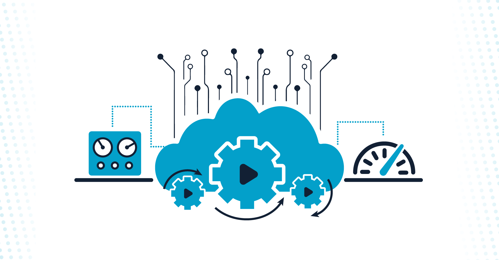
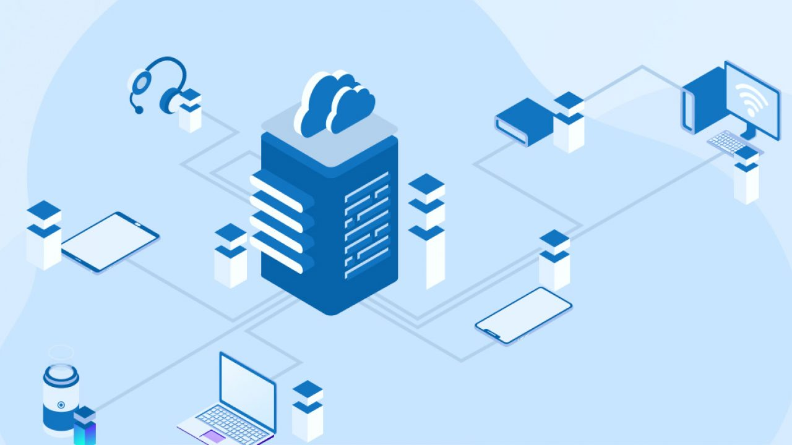

- Possibilities of Human Errors: Manual cloud provisioning increases the risk of human errors, potentially leading to misconfigurations and service disruptions. Inaccurate provisioning can result in resource inefficiencies, downtime, and compromised service reliability.
- Continuous Monitoring Difficulty: Continuous monitoring of provisioned resources requires dedicated efforts, and lapses in oversight may result in overlooked issues or inefficient resource allocation. Inadequate monitoring can lead to underperformance, security vulnerabilities, and difficulties in identifying and addressing emerging issues promptly.
- Security Concerns: Ensuring robust security protocols for provisioned resources is a persistent challenge, with evolving threats requiring constant adaptation and proactive measures. Security lapses can expose sensitive data, compromise client trust, and lead to regulatory non-compliance.
- Skills and Knowledge Gaps: The dynamic nature of cloud technologies necessitates ongoing training and skill development, posing challenges in keeping teams updated and aligned with the latest trends.
- Cost Management Complexity: Efficiently managing costs in the cloud environment, especially with fluctuating usage patterns, presents a complex challenge for providers and clients alike. Poor cost management may result in unexpected expenses, undermining the cost-effectiveness of cloud provisioning for both providers and clients.
- Lack of Automation: The absence or limited implementation of automated provisioning processes hinders efficiency, making it challenging to meet the dynamic demands of clients swiftly. It can lead to slower deployment times, resource bottlenecks, and reduced agility in responding to changing client needs.
- Billing Management: Managing and reconciling billing for various provisioned services, especially in multi-cloud or hybrid environments, presents a significant administrative challenge. Billing inaccuracies can strain client-provider relationships, leading to disputes and hindered trust.
- Cloud Automation Cloud automation is the implementation of tools and processes that reduce or eliminate the manual work of cloud provisioning, configuration and management.
- Provisioning Resources: This involves automating the process of setting up and managing cloud resources. Infrastructure as Code (IaC) plays a crucial role here, allowing infrastructure to be defined and managed through code. Tools like Terraform enable declarative configuration of cloud resources, while serverless scripting automates the provisioning of serverless architectures.
- Monitoring Resources: Observability is key to maintaining the health and performance of cloud environments. Automated monitoring processes help in detect and diagnose issues efficiently. Observability tools provide insights into system behavior, performance metrics, and log data, enabling proactive management and troubleshooting.
- Application Deployment: Automating the deployment of applications streamlines the release process, leading to faster and more reliable deployments. DevOps tools and practices promote automation in application build, testing, and deployment, ensuring consistency across environments and minimizing deployment errors.
- Configuration Management: Managing configurations across a dynamic cloud environment can be challenging. Automation helps in maintaining consistency and compliance by detecting and remedying configuration drift, where configurations diverge from their intended state. Automated configuration management tools ensure that systems remain configured according to desired standards.
- Security: Security automation, often called DevSecOps, integrates security practices into the DevOps pipeline. Automation helps in implementing security controls, scanning for vulnerabilities, and enforcing compliance policies throughout the development and deployment lifecycle. Automated security measures enhance the overall security posture of cloud environments.
- Workflow Orchestration: Cloud automation involves orchestrating various tasks and processes to streamline workflows. Workflow orchestration tools automate the sequencing and coordination of tasks, ensuring that complex processes run smoothly and efficiently. Automation of workflows improves agility, scalability, and reliability in cloud operations.
- Simplify Resource Management at Scale: The cloud is a complex, distributed network of resources, from hardware to software, organized into nodes handling millions of incoming requests or powering data storage and retrieval flows 24/7. Configuring, testing, updating, and troubleshooting those resources is nearly impossible under normal working conditions, thus the benefit of automation in streamlining those operations.
- Govern Cloud Resources: While human ingenuity is always welcome and needed in cloud development when it comes to handling the minute tasks of cloud management, it’s more important to have governance baked into your infrastructure. Cloud management and automation can give you that governance, minimizing errors and allowing your engineers to focus on other things than worrying about what component might fail, or triggering a cost spiral.
- Accelerate Time To Market: Computers work faster than humans–this isn’t debatable. Aside from just automating tasks for scalability and accuracy, administrators prefer automation because machines, when configured right, will just get the job done much quicker.
- Improve Security Posture: In regulated industries, security is non-negotiable. Furthermore, human error isn’t really an excuse for non-compliance. Automated systems can accurately support key compliance controls across an entire cloud environment using centralized policies.
- Getting Decision-Makers On Board With Automation Challenges may arise before you even start using automation at your organization. That’s because you may have difficulty convincing the senior members of the organization that using automation is the right move. That’s crucial if some or all of those parties have direct influence over whether or not you have the financial resources needed to make automation work.
- Implementing Automation While Being Mindful Of Cybersecurity Infrastructure Cybersecurity is a sector that’s ripe for automation. The technology can help cybersecurity teams become more aware of the type and volume of threats. It can also enable them to assess which problems are genuine, and which could be false alarms. Juniper Research polled cybersecurity professionals and found that 70% agreed automation was very important to their organizations’ security strategies.
- Not Choosing An Automation Strategy For Your Business Type Some companies only think of deploying automation in a non-specific way. They don’t research thoroughly enough to determine the best ways to apply automation to their respective industries. Process automation started in manufacturing but has since progressed to other sectors, including health care and retail. If you only think about using automation in a general sense, that’s likely a mistake.
- Pushback From Employees Worried About Being Replaced By Automation An announcement that your company plans to start using automation may make workers start fretting that their jobs are at risk. The Pew Research Center carried out a global poll to get people’s feelings on the matter. It found a widespread belief from members of society that, within 50 years, computers and robots would replace many of the jobs now done by humans.
- Failing To Use Metrics That Assess The Company’s Progress Towards Goals Setting goals associated with your automation plans is essential. But don’t stop there. You must also determine which statistics you’ll use to check whether you’re making headway in meeting those milestones. The metrics to choose will vary depending on your goals. That’s why you should take the time to decide which metrics to track, then how often to do it.
- Not Setting Aside Enough Time For Training Increased efficiency is usually one of the top benefits businesses bring up when highlighting the improvements automation can bring about. It’s one that you can probably look forward to as well, but only if you build training time into the staff schedule for employees to learn how to use the automation technology and become more comfortable with it.
- Cloud Management refers to the exercise of control over public, private or hybrid cloud infrastructure resources and services. This involves both manual and automated oversight of the entire cloud lifecycle, from provisioning cloud resources and services, through workload deployment and monitoring, to resource and performance optimizations, and finally to workload and resource retirement or reallocation. A well-designed cloud management strategy can help IT pros control those dynamic and scalable cloud computing environments.
- User self-Provisioning
- Dynamic Provisioning
- Advanced Provisioning
- Improved cost control Cloud resources and services cost money and can be deployed by almost any user with access to a cloud account. Management tracks and reports the resources and services being used, enabling businesses to gauge usage against cost. This can help prevent cloud waste and sprawl by identifying underutilized or obsolete cloud usage, which can be released for cost savings.
- Consistent control Cloud management basically reflects the organization's best practices and priorities, which can be tracked and enforced in a consistent way. With this, the entire organization is held to the same consistent standards in cloud usage.
- Improved compliance and data protectionCloud management almost universally implements strong authorization and authentication in the deployment of its resources and services. This can provide a meaningful platform for improved security, auditable data access, automated data backups and copies, and well-planned support for compliance requirements within the typical cloud shared responsibility model.
- Better business insightsCloud management reporting can help identify cloud usage by team, group, project or business division. This can help business leaders identify highest cloud usage against revenue or budget for better insights regarding how the cloud is actually being used -- and what that cloud use is bringing to the business.
- Security management The major public cloud vendors continue to invest in their services and improve cloud security, such as their ability to fend off distributed denial-of-service attacks. Some experts say that today's cloud attacks are far less devastating than on-premises ones because cloud attacks are generally limited to a single misconfigured service, whereas a local attack might devastate an entire infrastructure.
- Cloud security challenges Cloud security breaches and incidents still occur, even as security technologies improve and service providers gird their networks. Malicious actors can attack network hosts and web apps as fast as they can be fortified. Cloud administrators should test their environments and review the latest security audits and reports. Take care when adopting new technologies, such as AI and machine learning, which use many diverse and distributed data sources and therefore broaden the range for potential attacks.
- Cost management Cloud computing costs can spiral if they are not managed from the start. Numerous short-term and long-term cost optimization strategies for cloud configurations can help keep budgets in line.
- Cloud management and big data analytics Cloud management platforms are purpose-built to extract massive volumes of data from your application stack through automatically generated computer logs. Log files contain information about every event in your cloud environment, and analysis of those files can yield information about errors, security vulnerabilities, compliance and more.
- Cloud management and compliance Organizations without cloud management platforms can spend hundreds of hours each month collecting, normalizing and analyzing data to understand the performance and compliance status of cloud-based infrastructure and applications. With a cloud management platform, your IT organization can aggregate log and performance data from multiple cloud service providers into a single platform, monitor in real-time, and even generate customized reports.
Challenges of Cloud Provisioning
Cloud Automation
.png)
Types of Cloud Automation
Benefits of Cloud Automation
Challenges of Cloud Automation
Cloud Management
Types of Cloud Management
Benefits of Cloud Management
Challenges of Cloud Automation
Features of Automation
Conclusion
-
Cloud provisioning, cloud automation, and cloud management are essential components of cloud computing that work together to efficiently allocate resources, automate processes, and oversee the performance and security of cloud environments.
Shekinah Sto Domingo, BSIT 103, 04/22/24 ™